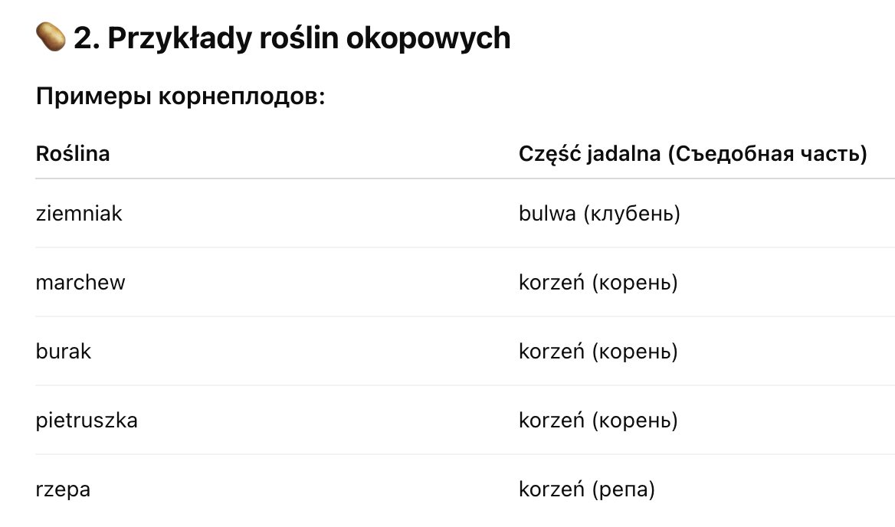

Przyroda > Swiat roślin > Rośliny okopowe
Swiat roślin
🥕 Rośliny okopowe
(Корнеплоды)
🌱 1. Co to są rośliny okopowe?
Что такое корнеплоды?
Rośliny okopowe — это растения, у которых jadalna część rośnie pod ziemią. Эта часть — корень или клубень, который мы едим.

🌿 3. Dlaczego rośliny okopowe są ważne?
-
Почему корнеплоды важны?
- Dostarczają nam dużo witamin i składników odżywczych.
- Są podstawą wielu potraw, np. zupy, sałatki, puree ziemniaczane.
- Możemy je długo przechowywać.